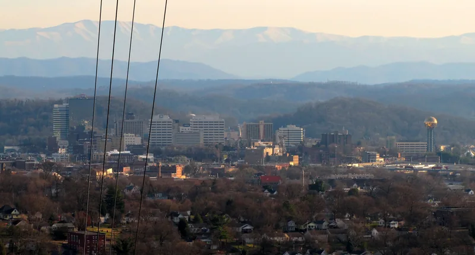

If you're collecting solar quotes, get the roof checked before you sign anything. Panels are built to sit up there a long time. The roof under them has to last that long too, or you'll pay to take the panels down and put them back halfway through their life.
Panels tend to outlast the roof under them
The Department of Energy says the average working life of a solar panel has grown from around 20 years in 2007 to 25 to 35 years in 2025, based on a Berkeley Lab survey of people in the solar industry (Department of Energy).
Compare that with the shingles. The Metal Roofing Alliance puts the average asphalt roof at 12 to 20 years (Metal Roofing Alliance). That's a metal trade group talking, so treat it as their low-side number. Even if your shingles beat it, a roof that's already halfway through its life won't make it to the end of a panel's.
The DOE's own guide to going solar tells you to think about the age of your roof and how long until it needs replacing (Department of Energy).

What it takes to reroof under panels later
When a roof with solar on it needs replacing, someone has to shut the system down, take the panels and racking off, store them, and then put everything back and test it once the roof is done. That's usually the solar company's job, not the roofer's. So you're paying two trades and scheduling around both, and the panels aren't making power while they're sitting in the garage. None of that work leaves you with anything you can see. It's money spent to end up right where you were, with panels on a roof.
Before you sign a solar contract, find out how it handles removal and reinstall, what it costs, and whether doing it affects the panel or workmanship warranty.
Our take: replace first if you're past halfway
Our opinion is simple. If your shingles are more than halfway through their life, replace the roof before the panels go up. You do the tear-off once, on a bare roof, and the panels go onto fresh shingles with fresh flashing. If the roof is only a few years old and in good shape, go ahead with the solar.
How do you know where your roof stands? Look for granules piling up in the gutters, curling or cracked shingles, repeat leaks and soft spots in the decking. Our post on signs a roof is near the end goes through each one. A free roof inspection gets you a straight answer before the solar installer shows up.
Flashing at the mounts
Each solar mount is a hole in your roof. Most racking bolts through the shingles into the rafters, and each of those attachments needs flashing that sheds water around the bolt, the same way a pipe boot does. A big array can have a lot of them.
Ask the solar installer:
- What flashing goes on each mount, and whether it slides under the shingle course above or is just sealed on top.
- Who's responsible if a mount leaks.
- Whether the panels will sit far enough from the ridge and valleys for water and leaves to clear.
Sealant by itself on a roof penetration dries out in the sun. Flashing that laps under the shingles keeps working.

If the roof is getting replaced anyway
Tell your roofer about the solar plans before the job starts. If the roofer knows where the array will sit, the plumbing vents and pipe boots can stay clear of it, so nobody has to pull panels later to fix a boot. Our roof replacement page covers what a full replacement includes, from tear-off to the ridge.
Questions
The solar company already looked at my roof. Isn't that enough?
Their site visit is mostly about sunlight and how the array will fit. A roofer is looking at the shingles, the decking and the flashing. You want both opinions before panels go up for 25 years or more.
What if the roof has a few good years left, but not many?
Then weigh two things: the years of roof life you'd give up by replacing early, and what the solar company charges to remove and reinstall the panels later. Get both in writing. If the removal price is a big number, the early roof usually comes out ahead.